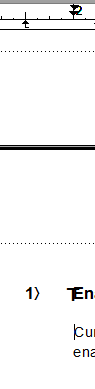
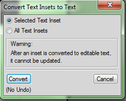
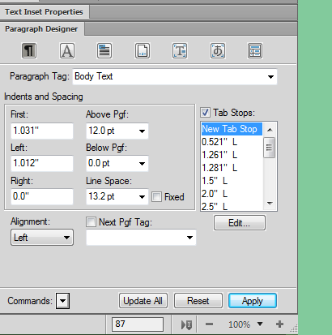

Fixing misaligned images in an imported Word document in FrameMaker 11¶
When importing Word documents into FrameMaker 11, one of the most common problems encountered by users is how images are aligned in the document. In some cases, images that were aligned properly in Word are outside the page area in FrameMaker. To resolve this issue, adjust the Tab Stops of the Headings and Body Text. The images will follow the alignment of the Body Text tab stops.
To adjust the tab stops to align images in an imported Word document:
Click to select the text of the imported Word document.
In the Text Inset properties tab, click Convert > Convert > OK.
Click View > Paragraph Designer.
Select text that is tagged as Heading 2 or Heading 1 in the document or select Heading 1 or Heading 2 from the list in Paragraph Designer.
Adjust the tab stops using the markers on the ruler or by inputting values in the Tab Stops box in Paragraph Designer. If needed, perform the same steps for the Body Text Paragraph tag.
Tip
If the rulers are not visible, click View > Rulers.
Click Apply > Update All.